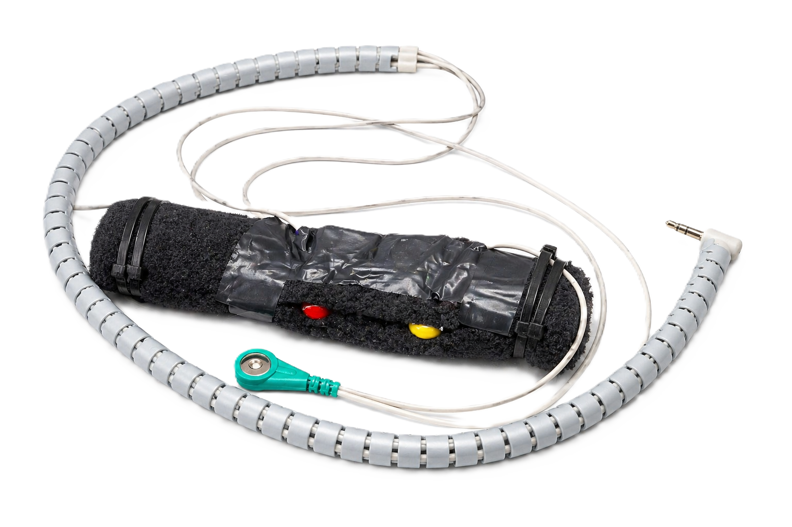
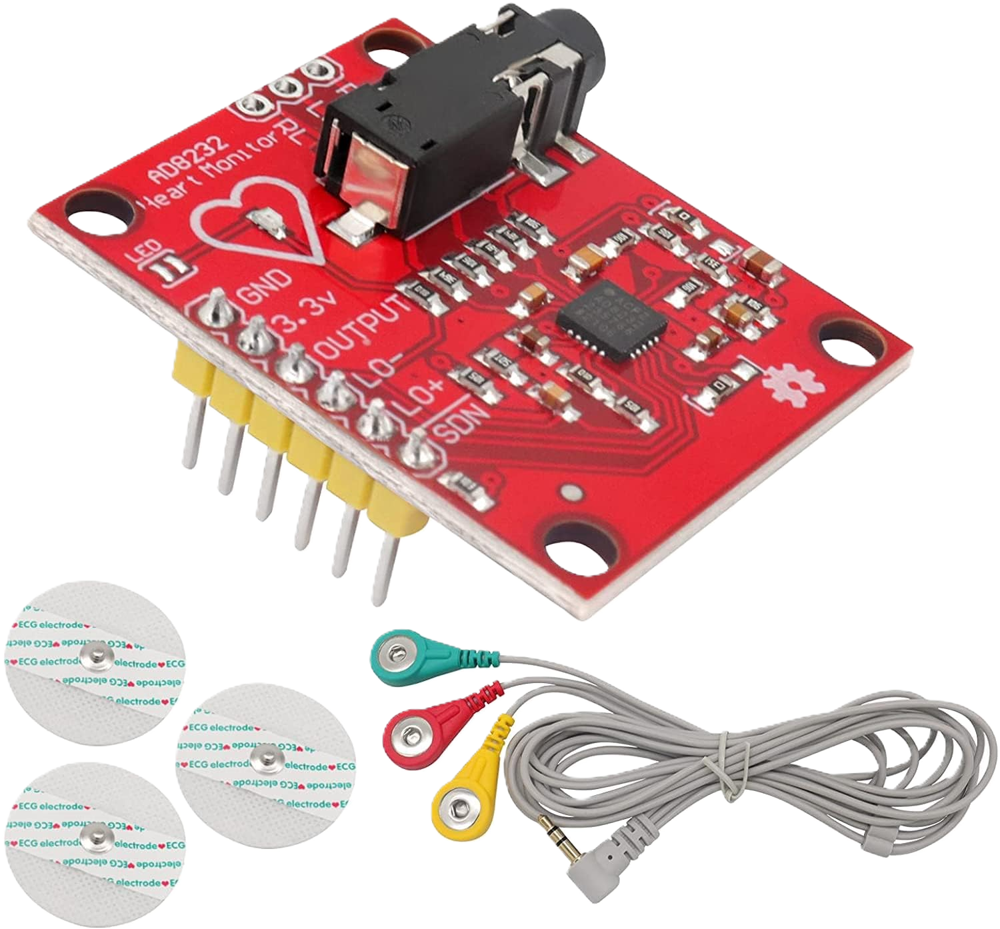
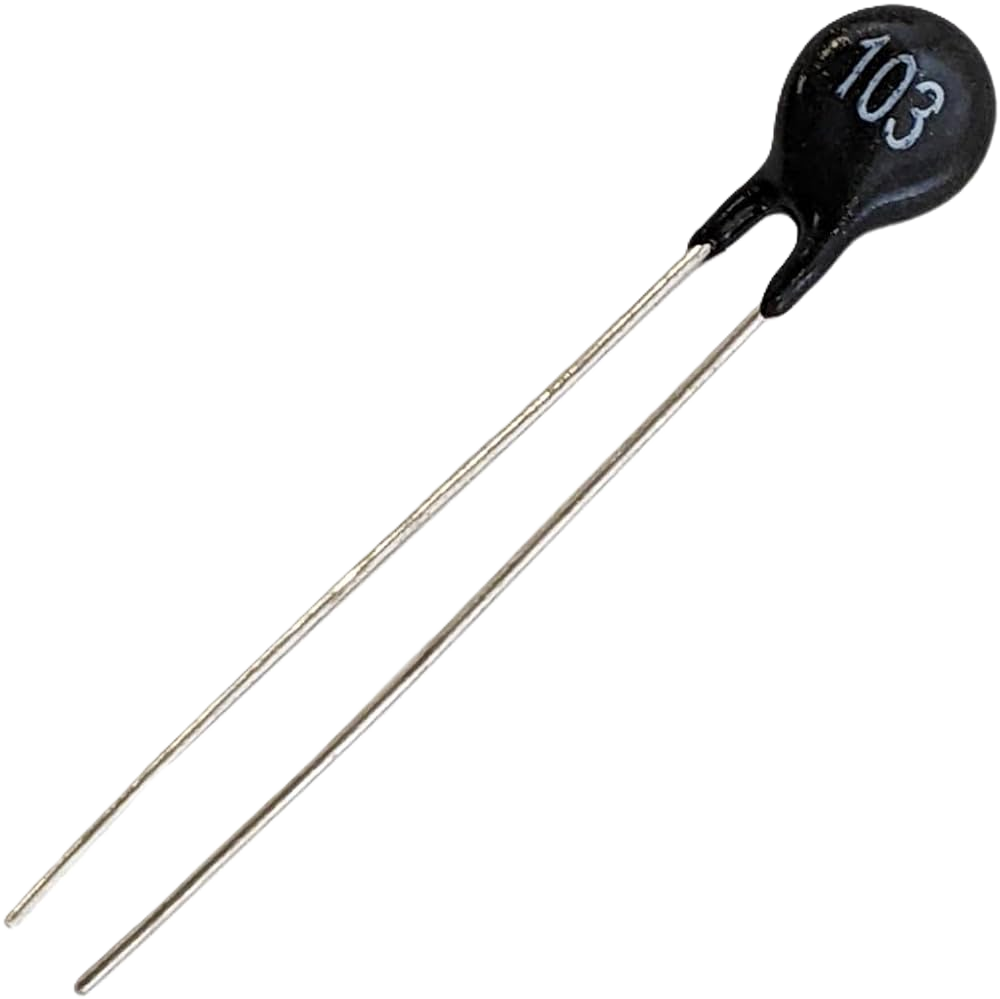
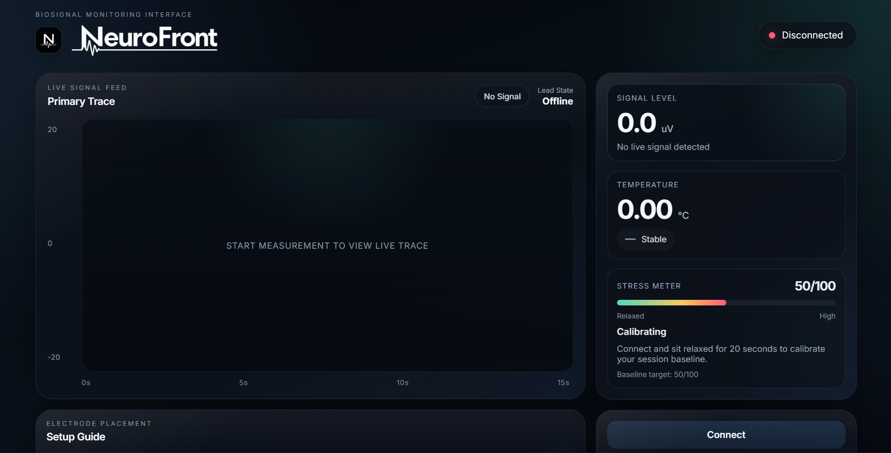

Every user starts from their own calibrated reference point.
Biosignal Intelligence Platform
Realtime Physiological Intelligence
NeuroFront turns live biosignals into clear, adaptive insight with wearable sensing, AI analysis, and personal calibration.
Electrical, thermal, galvanic, and wireless signals in one flow.
Live NeuroFront Command View
NeuroFront Live View


Neural baseline
50
Resting signature stored to the user profile.
Signal convergence
AI Adaptive
- Bluetooth link active
- Signal drift within range
Realtime monitoring
Secure baseline storage
About NeuroFront
About NeuroFront
NeuroFront reads change against the individual, not the average.
Personalized calibration
A short resting session defines each user's reference state.
0/100 baselineBaseline score system
50/100 becomes the neutral point for future comparison.
0% syncedAdaptive analysis
Live signals are interpreted in context and stored securely.
0 profile layersSensor Ecosystem
Sensor Ecosystem
A compact hardware stack for clean, continuous signal capture.

AD8232 Biosignal Sensor
Electrical activity
Captures subtle microvolt-level physiological traces.

Grove GSR Sensor V2.0
Skin conductance
Reads electrodermal change linked to arousal and stress.

NTC 10k Thermistor
Temperature drift
Tracks subtle thermal variation across a session.

ESP32 Control Layer
Wireless compute
Handles processing, Bluetooth, and live dashboard streaming.
How It Works
How It Works
A simple flow from setup to live insight.
1
Calibration
Resting activity is recorded.
2
Baseline Creation
50/100 is stored as the personal neutral point.
3
Live Signal Acquisition
Sensors stream data over Bluetooth.
4
AI Signal Processing
AI reads change against that baseline.
5
Neuro Score Generation
Above 50 rises. Below 50 settles.
6
Dashboard Visualization
Insights appear live on the dashboard.
Live Biosignal Dashboard
Live Biosignal Dashboard
Clear telemetry, quiet surfaces, and just enough signal detail.
Realtime Command Interface
Live biosignal command view

AI Analysis Layer
AI Analysis
NeuroFront learns each user's normal, then highlights what matters.
Baseline-aware
Every insight is measured against the user's own calibration.
Trend aware
Session history reveals recurring patterns over time.
Exportable Graph Analytics
Analytics
Review sessions, replay telemetry, and export polished reports.
Session analytics
Open Dashboard
Physiological trend map
00:00
18:32
Exports
Report builder
Signal overview
Ready
Temperature trend
Ready
Stress variability
Ready
Calibration summary
Ready
Playback
Historical signal replay
Platform Features
Platform Features
Personalized calibration
Adaptive baseline scoring
AI-powered biosignal analysis
Bluetooth connectivity
ESP32 wireless streaming
Realtime physiological tracking
Historical analytics
Exportable graphs and reports
Future of Human Interfaces
Future of Human Interfaces
Systems that understand the body in real time will feel more human, more adaptive, and more useful.
Human signals are becoming a new interface layer.
NeuroFront Awaits
Step Into NeuroFront
Adaptive wearable technology with realtime biosignal insight.